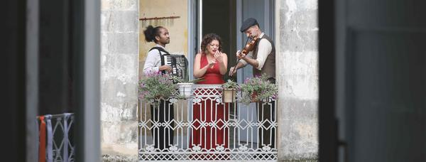

Matrimoni & eventi
Weddings & events
Serenate Wedding
La serenata napoletana come rito d'amore: dalla vigilia di nozze al ricevimento, un set acustico che lascia un'emozione autentica e duratura.
The Neapolitan serenade as a love ritual: from the wedding eve to the reception, an acoustic set that leaves an authentic and lasting emotion.
Scopri → Discover →